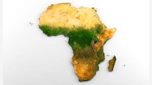
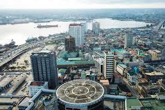
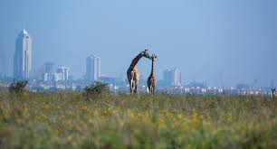
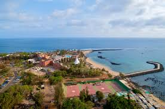

Africa is the world's second-largest and second-most populous continent The continent is surrounded by the Mediterranean Sea to the north, the Isthmus of Suez and the Red Sea to the northeast, the Indian Ocean to the southeast and the Atlantic Ocean to the west. The continent includes Madagascar and various archipelagos. It contains 54 fully recognised sovereign states (countries), eight territories and two de facto independent states with limited or no recognition.
Nigeria, an African country on the Gulf of Guinea, has many natural landmarks and wildlife reserves. Protected areas such as Cross River National Park and Yankari National Park have waterfalls, dense rainforest, savanna and rare primate habitats. One of the most recognizable sites is Zuma Rock, a 725m-tall monolith outside the capital of Abuja that’s pictured on the national currency
Kenya is a country in East Africa with coastline on the Indian Ocean. It encompasses savannah, lakelands, the dramatic Great Rift Valley and mountain highlands. It's also home to wildlife like lions, elephants and rhinos. From Nairobi, the capital, safaris visit the Maasai Mara Reserve, known for its annual wildebeest migrations, and Amboseli National Park, offering views of Tanzania's 5,895m Mt. Kilimanjaro.
Senegal, officially the Republic of Senegal, is a country in West Africa. Senegal is bordered by Mauritania in the north, Mali to the east, Guinea to the southeast, and Guinea-Bissau to the southwest.
